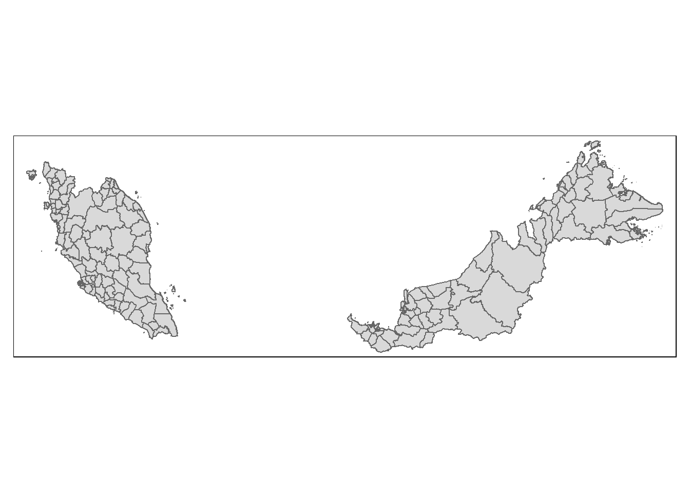

pacman::p_load(spdep, tmap, sf, ClustGeo, ggpubr, cluster, factoextra, NbClust, heatmaply, corrplot, psych, tidyverse, GGally)Take Home 3
Loading in the packages
Loading in the aspatial and spatial data
crime_district <- read_csv("data/aspatial/crime_district.csv")Rows: 19152 Columns: 6
── Column specification ────────────────────────────────────────────────────────
Delimiter: ","
chr (4): state, district, category, type
dbl (1): crimes
date (1): date
ℹ Use `spec()` to retrieve the full column specification for this data.
ℹ Specify the column types or set `show_col_types = FALSE` to quiet this message.population_district <- read_csv("data/aspatial/population_district.csv")Rows: 319200 Columns: 7
── Column specification ────────────────────────────────────────────────────────
Delimiter: ","
chr (5): state, district, sex, age, ethnicity
dbl (1): population
date (1): date
ℹ Use `spec()` to retrieve the full column specification for this data.
ℹ Specify the column types or set `show_col_types = FALSE` to quiet this message.msia_adm2_sf <- st_read(dsn = 'data/geosp', layer = 'mys_admbnda_adm2_unhcr_20210211')Reading layer `mys_admbnda_adm2_unhcr_20210211' from data source
`C:\santhyats\IS415-GAA\Take-Home_Exercises\Take-Home_Ex03\data\geosp'
using driver `ESRI Shapefile'
Simple feature collection with 144 features and 14 fields
Geometry type: MULTIPOLYGON
Dimension: XY
Bounding box: xmin: 99.64072 ymin: 0.855001 xmax: 119.2697 ymax: 7.380556
Geodetic CRS: WGS 84formatting the crime data to only include the state names and their respective districts. Also filter out the rows where the data is aggregated. since population data is from 2016-2022, we will also remove the 2023 data rows.
crime_district <- crime_district %>%
filter(state != "Malaysia") %>%
filter(category == "assault") %>%
filter(district != "All") %>%
filter(type != "all") %>%
filter(date != "2023-01-01")formatting the population data table to be simpler
library(dplyr)
library(lubridate)
# population_state_filtered <-
pop_data <- population_district %>%
filter(year(ymd(date)) >= 2016 & year(ymd(date)) <= 2022) %>%
filter(sex == 'both') %>%
filter(age == 'overall') %>%
filter(ethnicity == 'overall') %>%
select(-c(3:5))formatting the district boundary sf by dropping unnecessary columns
adm2_sf <- msia_adm2_sf %>% select(-c(3:5, 8,9,11,12))tm_shape(adm2_sf) + tm_polygons()
unique(pop_data$district) [1] "Batu Pahat" "Johor Bahru" "Kluang"
[4] "Kota Tinggi" "Kulai" "Mersing"
[7] "Muar" "Pontian" "Segamat"
[10] "Tangkak" "Baling" "Bandar Baharu"
[13] "Kota Setar" "Kuala Muda" "Kubang Pasu"
[16] "Kulim" "Langkawi" "Padang Terap"
[19] "Pendang" "Pokok Sena" "Sik"
[22] "Yan" "Bachok" "Gua Musang"
[25] "Jeli" "Kecil Lojing" "Kota Bharu"
[28] "Kuala Krai" "Machang" "Pasir Mas"
[31] "Pasir Puteh" "Tanah Merah" "Tumpat"
[34] "Alor Gajah" "Jasin" "Melaka Tengah"
[37] "Jelebu" "Jempol" "Kuala Pilah"
[40] "Port Dickson" "Rembau" "Seremban"
[43] "Tampin" "Bentong" "Bera"
[46] "Cameron Highlands" "Jerantut" "Kuantan"
[49] "Lipis" "Maran" "Pekan"
[52] "Raub" "Rompin" "Temerloh"
[55] "Bagan Datuk" "Batang Padang" "Hilir Perak"
[58] "Hulu Perak" "Kampar" "Kerian"
[61] "Kinta" "Kuala Kangsar" "Larut Dan Matang"
[64] "Manjung" "Muallim" "Perak Tengah"
[67] "Selama" "Perlis" "Barat Daya"
[70] "Seberang Perai Selatan" "Seberang Perai Tengah" "Seberang Perai Utara"
[73] "Timur Laut" "Beaufort" "Beluran"
[76] "Kalabakan" "Keningau" "Kinabatangan"
[79] "Kota Belud" "Kota Kinabalu" "Kota Marudu"
[82] "Kuala Penyu" "Kudat" "Kunak"
[85] "Lahad Datu" "Nabawan" "Papar"
[88] "Penampang" "Pitas" "Putatan"
[91] "Ranau" "Sandakan" "Semporna"
[94] "Sipitang" "Tambunan" "Tawau"
[97] "Telupid" "Tenom" "Tongod"
[100] "Tuaran" "Asajaya" "Bau"
[103] "Belaga" "Beluru" "Betong"
[106] "Bintulu" "Bukit Mabong" "Dalat"
[109] "Daro" "Julau" "Kabong"
[112] "Kanowit" "Kapit" "Kuching"
[115] "Lawas" "Limbang" "Lubok Antu"
[118] "Lundu" "Maradong" "Marudi"
[121] "Matu" "Miri" "Mukah"
[124] "Pakan" "Pusa" "Samarahan"
[127] "Saratok" "Sarikei" "Sebauh"
[130] "Selangau" "Serian" "Sibu"
[133] "Simunjan" "Song" "Sri Aman"
[136] "Subis" "Tanjung Manis" "Tatau"
[139] "Tebedu" "Telang Usan" "Gombak"
[142] "Klang" "Kuala Langat" "Kuala Selangor"
[145] "Petaling" "Sabak Bernam" "Sepang"
[148] "Ulu Langat" "Ulu Selangor" "Besut"
[151] "Dungun" "Hulu Terengganu" "Kemaman"
[154] "Kuala Nerus" "Kuala Terengganu" "Marang"
[157] "Setiu" "W.P. Kuala Lumpur" "W.P. Labuan"
[160] "W.P. Putrajaya" "Cameron Highland" "Sp Selatan"
[163] "Sp Tengah" "Sp Utara" unique(adm2_sf$ADM2_EN) [1] "Batu Pahat" "Johor Bahru" "Kluang"
[4] "Kota Tinggi" "Kulaijaya" "Ledang"
[7] "Mersing" "Muar" "Pontian"
[10] "Segamat" "Baling" "Bandar Baharu"
[13] "Kota Setar" "Kuala Muda" "Kubang Pasu"
[16] "Kulim" "Langkawi" "Padang Terap"
[19] "Pendang" "Pokok Sena" "Sik"
[22] "Yan" "Bachok" "Gua Musang"
[25] "Jeli" "Kota Bharu" "Kuala Krai"
[28] "Machang" "Pasir Mas" "Pasir Puteh"
[31] "Tanah Merah" "Tumpat" "WP. Kuala Lumpur"
[34] "W.P. Labuan" "Alor Gajah" "Jasin"
[37] "Melaka Tengah" "Jelebu" "Jempol"
[40] "Kuala Pilah" "Port Dickson" "Rembau"
[43] "Seremban" "Tampin" "Bentong"
[46] "Bera" "Cameron Highlands" "Jerantut"
[49] "Kuantan" "Lipis" "Maran"
[52] "Pekan" "Raub" "Rompin"
[55] "Temerloh" "Batang Padang" "Hilir Perak"
[58] "Ulu Perak" "Kampar" "Kerian"
[61] "Kinta" "Kuala Kangsar" "Larut Dan Matang"
[64] "Manjung (Dinding)" "Perak Tengah" "Perlis"
[67] "Barat Daya" "S.P.Selatan" "S.P. Tengah"
[70] "S.P. Utara" "Timur Laut" "Beaufort"
[73] "Beluran" "Keningau" "Kinabatangan"
[76] "Kota Belud" "Kota Kinabalu" "Kota Marudu"
[79] "Kuala Penyu" "Kudat" "Kunak"
[82] "Lahad Datu" "Nabawan" "Papar"
[85] "Penampang" "Pitas" "Putatan"
[88] "Ranau" "Sandakan" "Semporna"
[91] "Sipitang" "Tambunan" "Tawau"
[94] "Tenom" "Tongod" "Tuaran"
[97] "Asajaya" "Bau" "Belaga"
[100] "Betong" "Bintulu" "Dalat"
[103] "Daro" "Julau" "Kanowit"
[106] "Kapit" "Kuching" "Lawas"
[109] "Limbang" "Lubok Antu" "Lundu"
[112] "Marudi" "Matu" "Meradong"
[115] "Miri" "Mukah" "Pakan"
[118] "Samarahan" "Saratok" "Sarikei"
[121] "Selangau" "Serian" "Sibu"
[124] "Simunjan" "Song" "Sri Aman"
[127] "Tatau" "Besut" "Dungun"
[130] "Hulu Terengganu" "Kemaman" "Kuala Terengganu"
[133] "Marang" "Setiu" "W.P. Putrajaya"
[136] "Gombak" "Ulu Langat" "Ulu Selangor"
[139] "Klang" "Kuala Langat" "Kuala Selangor"
[142] "Petaling" "Sabak Bernam" "Sepang" unique(crime_district$district) [1] "Batu Pahat" "Iskandar Puteri" "Johor Bahru Selatan"
[4] "Johor Bahru Utara" "Kluang" "Kota Tinggi"
[7] "Kulaijaya" "Ledang" "Mersing"
[10] "Muar" "Nusajaya" "Pontian"
[13] "Segamat" "Seri Alam" "Baling"
[16] "Bandar Baharu" "Bandar Bharu" "Kota Setar"
[19] "Kuala Muda" "Kubang Pasu" "Kulim"
[22] "Langkawi" "Padang Terap" "Pendang"
[25] "Sik" "Yan" "Bachok"
[28] "Gua Musang" "Jeli" "Kota Bharu"
[31] "Kuala Krai" "Machang" "Pasir Mas"
[34] "Pasir Puteh" "Tanah Merah" "Tumpat"
[37] "Alor Gajah" "Jasin" "Melaka Tengah"
[40] "Jelebu" "Jempol" "Kuala Pilah"
[43] "Nilai" "Port Dickson" "Rembau"
[46] "Seremban" "Tampin" "Bentong"
[49] "Bera" "Cameron Highland" "Cameron Highlands"
[52] "Jerantut" "Kuala Lipis" "Kuantan"
[55] "Maran" "Pekan" "Raub"
[58] "Rompin" "Temerloh" "Batu Gajah"
[61] "Gerik" "Hilir Perak" "Ipoh"
[64] "Kampar" "Kerian" "Kuala Kangsar"
[67] "Manjung" "Pengkalan Hulu" "Perak Tengah"
[70] "Selama" "Sungai Siput" "Taiping"
[73] "Tanjong Malim" "Tapah" "Arau"
[76] "Kangar" "Padang Besar" "Barat Daya"
[79] "Seberang Perai Selatan" "Seberang Perai Tengah" "Seberang Perai Utara"
[82] "Timur Laut" "Beaufort" "Beluran"
[85] "Keningau" "Kota Belud" "Kota Kinabalu"
[88] "Kota Kinabatangan" "Kota Marudu" "Kudat"
[91] "Kunak" "Lahad Datu" "Papar"
[94] "Penampang" "Ranau" "Sandakan"
[97] "Semporna" "Sipitang" "Tawau"
[100] "Tenom" "Tuaran" "W.P. Labuan"
[103] "Bau" "Belaga" "Betong"
[106] "Bintulu" "Dalat" "Julau"
[109] "Kanowit" "Kapit" "Kota Samarahan"
[112] "Kuching" "Lawas" "Limbang"
[115] "Lubok Antu" "Lundu" "Marudi"
[118] "Matu Daro" "Meradong" "Miri"
[121] "Mukah" "Padawan" "Saratok"
[124] "Sarikei" "Serian" "Sibu"
[127] "Simunjan" "Song" "Sri Aman"
[130] "Tatau" "Ampang Jaya" "Gombak"
[133] "Hulu Selangor" "Kajang" "Klang Selatan"
[136] "Klang Utara" "Kuala Langat" "Kuala Selangor"
[139] "Petaling Jaya" "Sabak Bernam" "Sepang"
[142] "Serdang" "Sg. Buloh" "Shah Alam"
[145] "Subang Jaya" "Sungai Buloh" "Besut"
[148] "Dungun" "Hulu Terengganu" "Kemaman"
[151] "Kuala Terengganu" "Marang" "Setiu"
[154] "Brickfields" "Cheras" "Dang Wangi"
[157] "Sentul" "W.P. Putrajaya" "Wangsa Maju" write_rds(pop_data, "data/rds/pop_data.rds")
write_rds(crime_district, "data/rds/crime_district.rds")
write_rds(adm2_sf, "data/rds/adm2_sf.rds")crime_district$district <- tolower(trimws(crime_district$district))
adm2_sf$ADM2_EN <- tolower(trimws(adm2_sf$ADM2_EN))new_sf<- left_join(crime_district, adm2_sf, by= c("district" = "ADM2_EN"))new_sf_na<- new_sf[rowSums(is.na(new_sf)) > 0,]